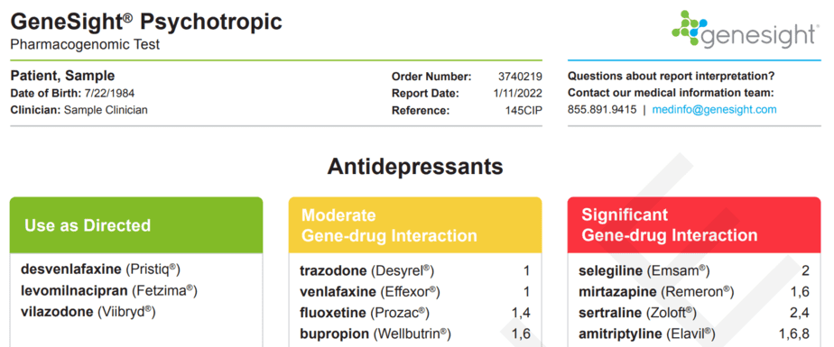
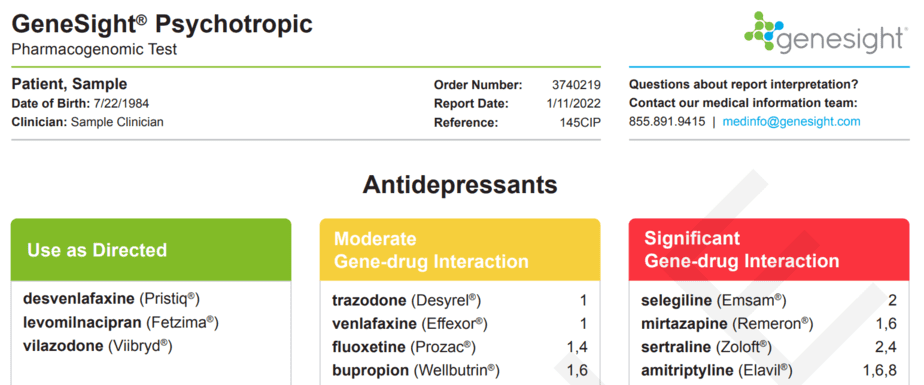

During a psychiatric evaluation, the mental health provider gathers information through various methods, such as diagnostic interview, questionnaire screenings and standardized assessments. They explore the individual's medical history, personal and social history, family history, current symptoms, past trauma, and relevant life events. The provider will ask questions to obtain information about active and past symptoms, duration, and severity to determine an accurate diagnosis and treatment plan.
A Psychiatric Evaluation takes approximately 60 minutes. Your provider may also decide to order other testing, such as blood work to look at the overall health of the patient and rule out any underlying issues that may be contributing to a decline in mental health.

Psychiatric medication management is the process of working with your mental health provider to ensure that your psychiatric medications are effective and safe. This may include changing doses, switching medications, or adding new drugs. Medication management can significantly reduce symptoms and help people focus on their recovery. In fact, proper medication management can make the difference in someone keeping close relationships, staying healthy, keeping a job, and avoiding trouble.
The same prescription drug can affect one person differently than it affects another person. Our providers thoroughly discuss expectations, potential side effects that can occur and different options that are available, while considering cost-effectiveness. We also help patients discontinue and safely taper off medications that are no longer needed, effective or beneficial to their health.
Medication management appointments can vary in frequency from weekly to every 1-3 months depending on the type of medication, diagnosis, and severity of symptoms. Most refills are done during the follow up appointments.

Have you:
We know the process of finding medication that works can be frustrating, time-consuming and debilitating. The GeneSight® Test analyzes how your genes may respond to and metabolize medications. A simple cheek swab is done to collect a saliva sample and sent out to a laboratory. Results come back in 3-5 business days.
The GeneSight Psychotropic report may help you avoid multiple medication trials by providing information about which medications may require dose adjustments, be less likely to work, or have an increased risk of side effects based on the patient’s genetic information.
 
